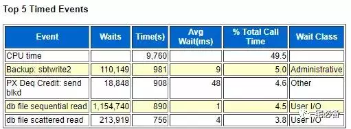
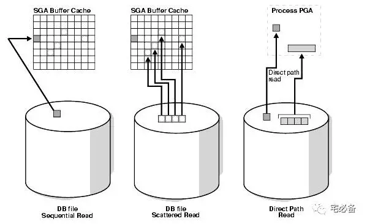
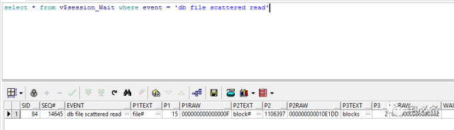
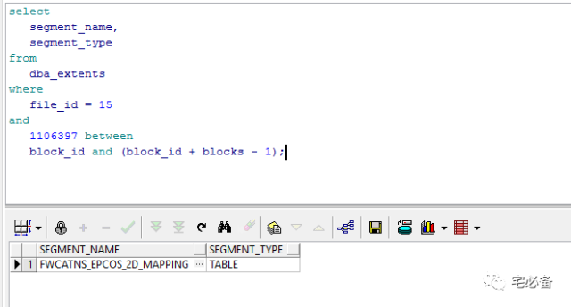
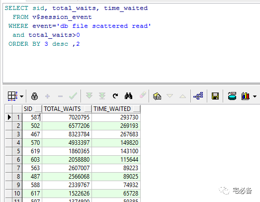
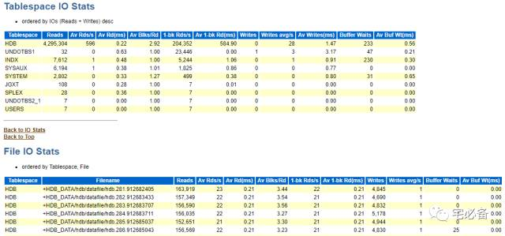
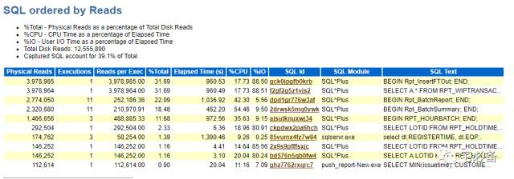

db file scattered read等待事件
原创 2017-07-22 Oracle 宅必备
从今天开始讲解awr报告Top 5 Timed Events部分
今天讲scattered read等待事件
db file scattered read

物理读发生在一个用户需要的数据块不在SGA，从而将其从磁盘读取到SGA中
如果此时别的会话需要该数据块则必须等待这个过程结束，这时就产生了等待
离散读是物理读的一种方式,这里的离散指的是读取数据块到一块离散(不连续)的内存区域，而且一般读取多个数据块( multi-block read)，可能为单个数据库
如该等待严重则说明该数据块存在严重的争用情况
每次读取的块数由DB_FILE_MULTIBLOCK_READ_COUNT参数控制
这点不同于sequential read，可参考下一篇关于sequential read 的文章
下图为各种读取方式的比较 
何时会发生
多数据块读(multi-block read)是由SQL语句引起的(用户发出或者递归调用)
一般发生在以下情况:
- 全表扫描( full table scans )
- 索引快速全扫描( index fast full scans)
如何处理
由于物理读是非常正常的，出现这个等待事件不意味着数据库出现性能问题
但是如果我们在TOP 5 Wait Event中看到其处于非常前的位置(第二甚至第一)时就需要引起我们的注意了，OLTP系统中应避免此等待
特别需要关注Avg Waits 参数，最好小于10ms，这里可采用如下方法进行解决
- 将数据文件放在高速磁盘中，提高读取性能
- 将数据文件放在LUN(即一些存储设备)中，可确保数据块分散在足够多的磁盘中
在优化磁盘的同时，我们还需要注意应用程序的SQL语句问题，因为一般这种等待都是SQL语句造成的，我们需要找出相应的SQL语句
- 通过执行计划进行优化判断全表扫描或者索引全扫描是否合理，是否使用了合适的驱动表，以需要达到减少物理读和逻辑读的目的
- 执行计划中 HASH JOIN和SORT MERGE动作(operation)会导致scattered read
- 可增加 DB_FILE_MULTIBLOCK_READ_COUNT参数的值来减少IO次数
- 调整HASH_AREA_SIZE 和OPTIMIZER_INDEX_COST_ADJ 参数的值也可用来优化scattered read
- 保证统计信息的及时性
如下是一些常用的诊断方式，通过下面方式定位到具体的会话，在通过sql_id或hash_value找出具体的语句用于优化
1. 查看当前正在等待的会话
我们可以查看v$session_wait 视图的TIME_WAITED栏位来定位当前哪个会话等待 scattered read过长时间(实时)
select * from v$session_Wait where event = 'db file scattered read'

P1代表File ID，可通过dba_data_File视图的FILE_ID字段看出是哪个数据文件
P2代表 First block，即该块在数据库上开始的位置
P3代表块数，该值的取值范围为1-DB_FILE_MULTIBLOCK_READ_COUNT的值
我们可以通过P1 P2参数得出对象的名称和类型
select
segment_name,
segment_type
from
dba_extents
where
file_id = 15
and
1106397 between
block_id and (block_id + blocks - 1);

2.查看从实例启动以来等待的会话
使用 v$session_event视图来定位哪个会话等待 scattered read过长时间(非实时)
也可使用v$system_event视图查看系统整体的等待事件
SELECT sid, total_waits, time_waited
FROM v$session_event
WHERE event='db file scattered read'
and total_waits>0
ORDER BY 3 desc ,2

注意由于SID是可以复用的，这样查出来的有可能有问题
比如查看SID为587的会话对应的语句也有可能是上个SQL语句导致的scattered read等待，这点需要注意
查看高物理读的数据文件
我们可以通过awr报告中的 Tablespace IO Stats 和File IO Stats 区域来定位最多IO操作的表空间和数据文件，如果可以请将其放置在高速的磁盘中(SSD)

查看高物理读的SQL语句
同样可以查看v$sql中高物理读的语句以及awr SQL ordered by Reads区域

参考资料
https://www.toadworld.com/platforms/oracle/w/wiki/787.db-file-scattered-read
https://asktom.oracle.com/pls/asktom/f?p=100:11:0::::P11_QUESTION_ID:957829973821
https://gerardnico.com/wiki/database/oracle/db_file_scattered_read